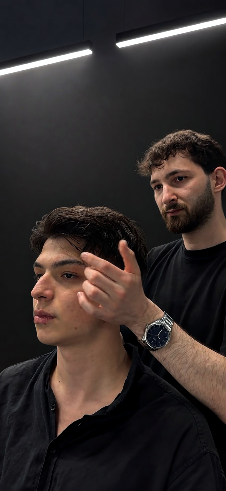
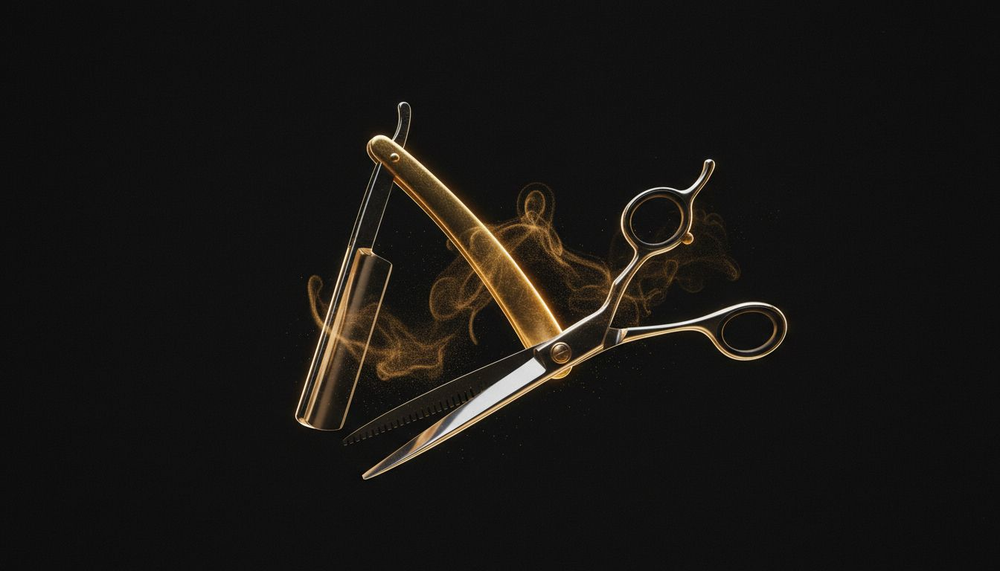
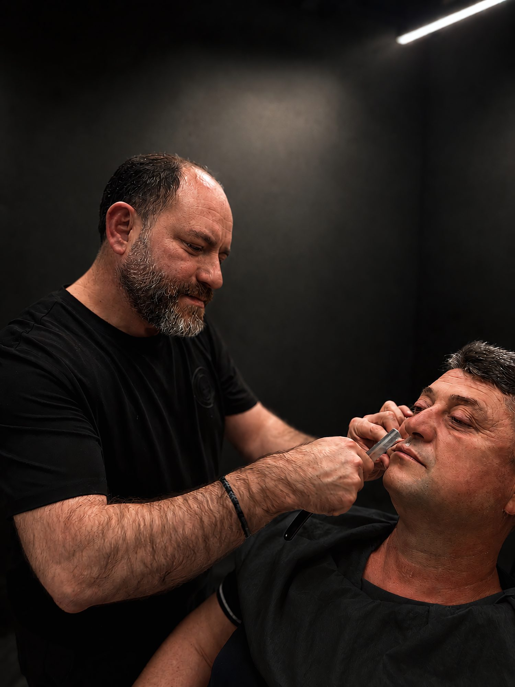

Berber
Makasın disiplini, usturanın sabrı. Her koltukta bir zanaat, her tıraşta imza niteliğinde bir çizgi.
Saçınıza yatırım yapın; o, asla çıkarmayacağınız tacınızdır.
Yüz hatlarına göre şekillenen, milimetrik özenle çizilen keskin geçişler ve dengeli formlar.
Yüz ifadesini tamamlayan; hatları netleştirilmiş, bilinçli ve keskin bir sakal tasarımı.
Kalıp değil karakter. Saç yapına, tarzına ve yaşamına yakışan, sana özel bir kesim.
Nova Cut’ın koltuklarında deneyim ve tutku bir araya geliyor. Berberini seç, randevunu oluştur.


Kesim, tek tek verilen kararların toplamıdır. Saçın yönünü, hacmini ve düştüğü çizgiyi okuyup; yüz hattına en çok yakışan formu ortaya çıkarırız.
Aceleye yer yok. Makas ve makine, doğru orantıda buluşana kadar çalışır.
Nova Cut · İçmelerSade bir menü, özenle uygulanan detaylar. Randevu ekranında saç, sakal ya da saç & sakal olarak seçebilirsin.
Makas ve makine dengesi, yüz hattına göre şekillendirme ve temiz kenar geçişleri.
Sakal hatlarının belirginleştirilmesi, bakım ve forma sokma dokunuşları.
Kesim ve sakal tasarımının birlikte tamamlandığı, bütünlüklü bir görünüm.

Keskin bir ustura, sabırlı bir el ve doğru ışık. Gerisi zamanla gelir.

Köpük ve usturanın cilde değdiği o an. Klasik tıraş; acele etmeyen, güven isteyen ve sonunda pürüzsüz bir yüz bırakan bir gelenektir.
Her hareket ölçülü, her hat bilinçli. Berberliğin en eski ritüeli, Nova Cut’ta yaşıyor.
Nova Cut · İçmelerBerberini seç, hizmetini belirle ve sana uygun saati birkaç adımda ayırt.
Randevunu Oluştur